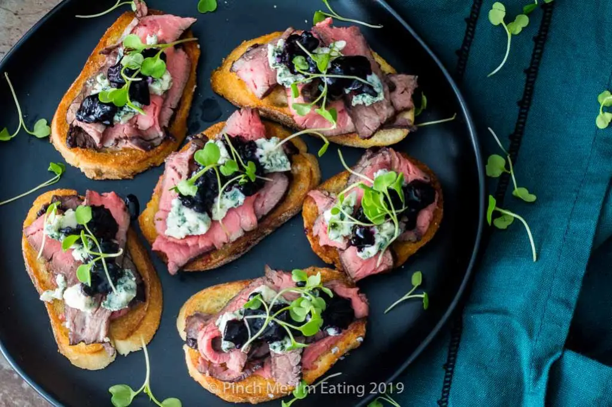

Appetizer. Steak & Blue Cheese Bruschetta with Onion & Roasted Tomato Jam
Savory and sweet!
Ingredients
- 5 tablespoons olive oil, divided
- 1 large sweet onion, halved and thinly sliced
- 1 cup grape tomatoes, halved
- 1/2 teaspoon kosher salt, divided
- 1/4 teaspoon freshly ground pepper, divided
- 6 ounces cream cheese, softened
- 3/4 cup crumbled blue cheese. 3 garlic cloves, minced
- 16 slices French bread baguette (1/2 inch thick)
- 2 beef ribeye steaks (3/4 inch thick and 8 ounces each)
- 1-1/2 teaspoons Montreal steak seasoning
- 2 tablespoons balsamic vinegar

Instructions
- Preheat oven to 400°. In large skillet, heat 2 tablespoons oil over medium-high heat; saute onion until softened. Reduce heat to medium-low; cook until golden brown, 25-30 minutes, stirring occasionally
- Toss tomatoes with 1 tablespoon oil, 1/4 teaspoon salt and 1/8 teaspoon pepper; spread in a 15x10x1-in. pan. Roast until softened, 10-15 minutes. Stir tomatoes into onion, mashing lightly. In small bowl, mix cream cheese, blue cheese, garlic and the remaining salt and pepper.
- Brush bread slices with remaining oil; grill, covered, over medium heat until lightly toasted, 1-2 minutes per side. Sprinkle steaks with steak seasoning. Grill, covered, over medium heat until meat reaches desired doneness (for medium-rare, a thermometer should read 135°; medium, 140°; medium-well, 145°), 3-5 minutes per side. Let stand 5 minutes before slicing
- To serve, spread toasts with cheese mixture; top with steak and onion mixture. Drizzle with vinegar